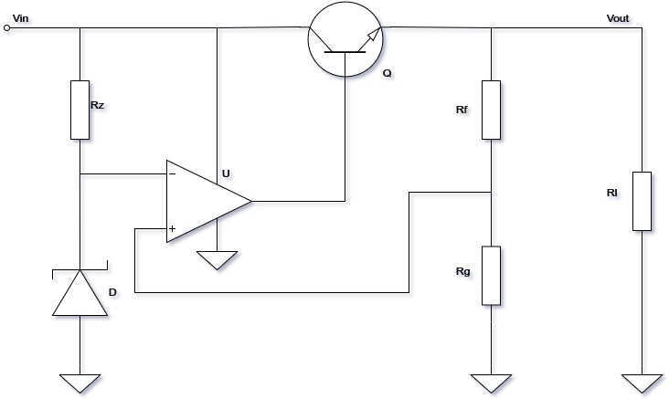
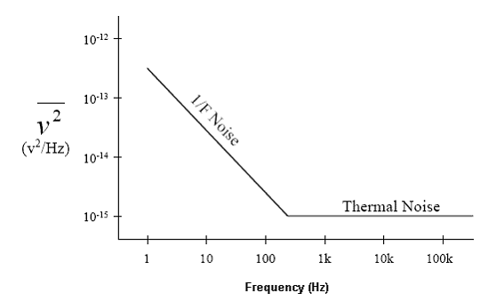
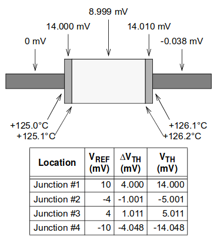
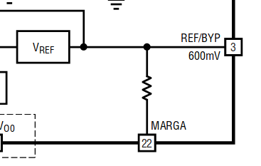
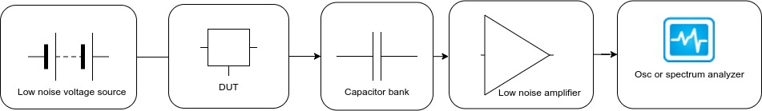
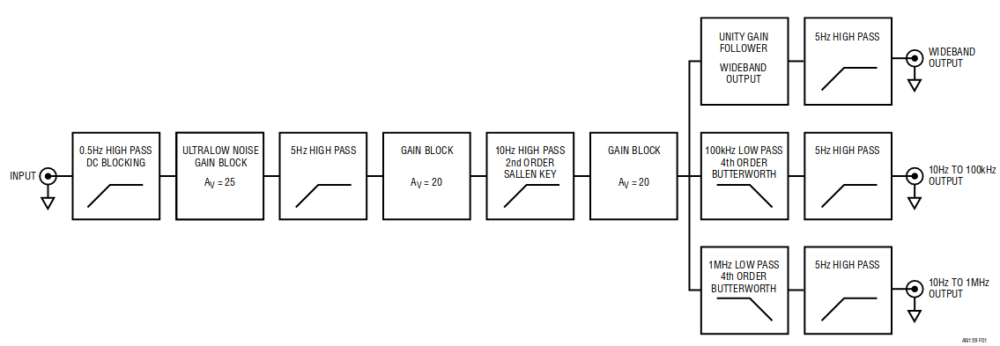
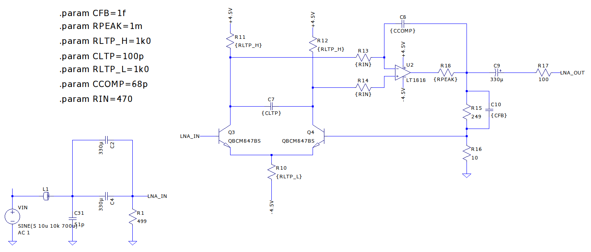
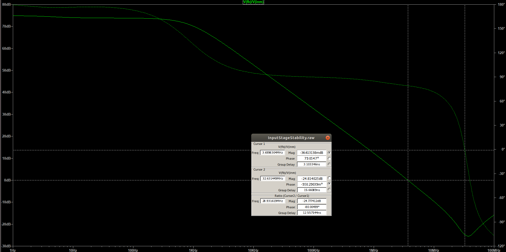
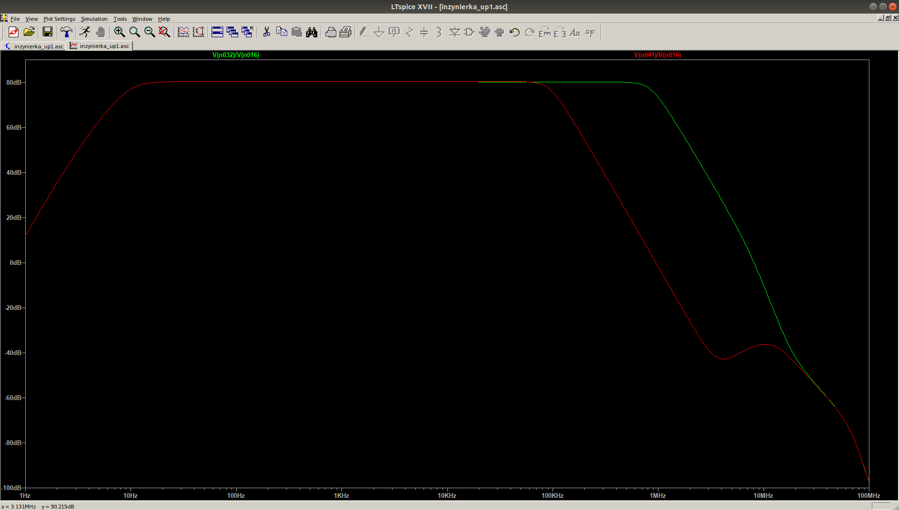

Measuring Noise in Voltage Regulators
Paweł Woźny Faculty of Electronics and Telecommunication, AGH
Introduction
Following presentation will cover state of the art in current methods of measuring noise generated by regulators.
In addition, current progress of my work will be shown.
Agenda:
-
What is voltage regulator?
-
What noise regulators have?
-
How to combat them?
-
My progress.
Voltage regulator
is a device which converts unregulated supply to more or less stable output.
Simple regulator with opamp:

Theory of operation
-
Voltage reference.
-
Feedback network.
-
Error amplifier.
-
Output stage.
Sources of noise in circuit
-
Intrinsic semiconductor’s noises:
-
popcorn noise,
-
shot noise,
-
1/f (pink)noise.
-
Thermal noise (Johnson, wide-band, white)

-
Effect of temperature dependency.
-
Seebeck (Thermoelectric effect).

-
Electromagnetic coupling
-
Piezoelectric effects
Mitigation of noise
-
Improving process of lithography.
-
Using dynamic offset cancelation (chopper amplifier).
-
Using smaller value of resistance:
-
600 Ohm resistor, 1kHz BW: 0.098uV RMS
-
50 Ohm resistor, 1kHz BW: 0.0089uV RMS
-
Derating elements.
-
Filtering the reference:

State of the art
Simplified block diagram:

Fully fledged block diagram:

First stage of amplifier:

My adaptation:

Stability of amplifier:

transfer Function:

ToDo:
-
Order components
-
create and validate layout
-
perform meauserments